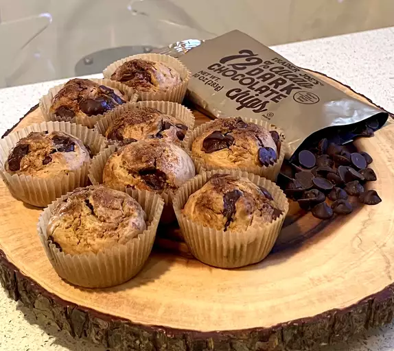

Chocolate Chip Muffin

Description
These chocolate chip muffins are simply delicious. You won't believe how easy and quick they are to make!
Ingredients
- Milk: This moist chocolate chip muffin recipe starts with milk.
- Oil: Instead of butter, this recipe calls for a neutral oil (such as vegetable oil).
- Egg: An egg lends moisture and acts as a binder, which means it helps hold the batter together.
- Flour: All-purpose flour gives the batter structure.
- Sugar: White sugar sweetens things up a bit.
- Baking Powder: Baking powder acts as a leavener, which means it helps the batter rise.
- Chocolate Chips: Of course, you'll need chocolate chips!
Steps
- Preheat the oven to 400 degrees F (200 degrees C). Grease a 12-cup muffin tin or line cups with paper liners.
- Combine milk, oil, and egg in a small bowl until well blended. Combine flour, 1/2 cup sugar, baking powder, and salt together in a large bowl, making a well in the center. Pour milk mixture into well and stir until batter is just combined; fold in chocolate chips.
- Spoon batter into the prepared muffin cups, filling each 2/3 full. Mix 3 tablespoons white sugar and brown sugar together in a small bowl; sprinkle on tops of muffins.
- Bake in the preheated oven until tops spring back when lightly pressed, about 20 to 25 minutes. Cool in the tin briefly, then transfer to a wire rack. Serve warm or cool completely.